Control Plane Lab do watsonx Orchestrate
Explore o Agentic Control Plane (ACP) para gerenciar, observar e otimizar agentes de forma centralizada em diferentes equipes, ferramentas, modelos e runtimes.
Visão Geral
O Control Plane do watsonx Orchestrate oferece às empresas uma forma centralizada de gerenciar, observar e otimizar agents em diferentes equipes, ferramentas, modelos e runtimes — sejam eles construídos no Orchestrate ou executados em outros ambientes.
Neste lab, vamos experimentar em primeira mão o Agentic Control Plane (ACP). Tenha em mente que os benefícios do ACP ficam mais evidentes quanto mais agentes e ferramentas você tiver construído e implementado, tanto no watsonx Orchestrate quanto externamente, e quanto mais você tiver interagido com eles para obter dados reais.
Caso tenha seu próprio ambiente dedicado do watsonx Orchestrate, você poderá ver apenas alguns agents no dashboard do ACP. De qualquer forma, você poderá experimentar e aprender sobre os benefícios do Agentic Control Plane na prática!
Estamos trabalhando em uma atualização deste laboratório para incluir scripts para os instrutores importarem agents e ferramentas, de forma que o dashboard contenha uma variedade de dados suficiente para executar este lab do Agentic Control Plane de forma independente. O laboratório é vivo e será atualizado ao decorrer dos próximos dias...
Explorando o Control Plane — Dashboard
Clique em IBM watsonx Orchestrate no canto superior esquerdo para ir à tela inicial/dashboard, caso ainda não esteja lá.
O dashboard é a experiência inicial do Control Plane, o ponto de partida para gerenciar seu ecossistema de agents. A partir daqui, podemos visualizar rapidamente métricas de desempenho e a saúde geral do ambiente de AI Agents.
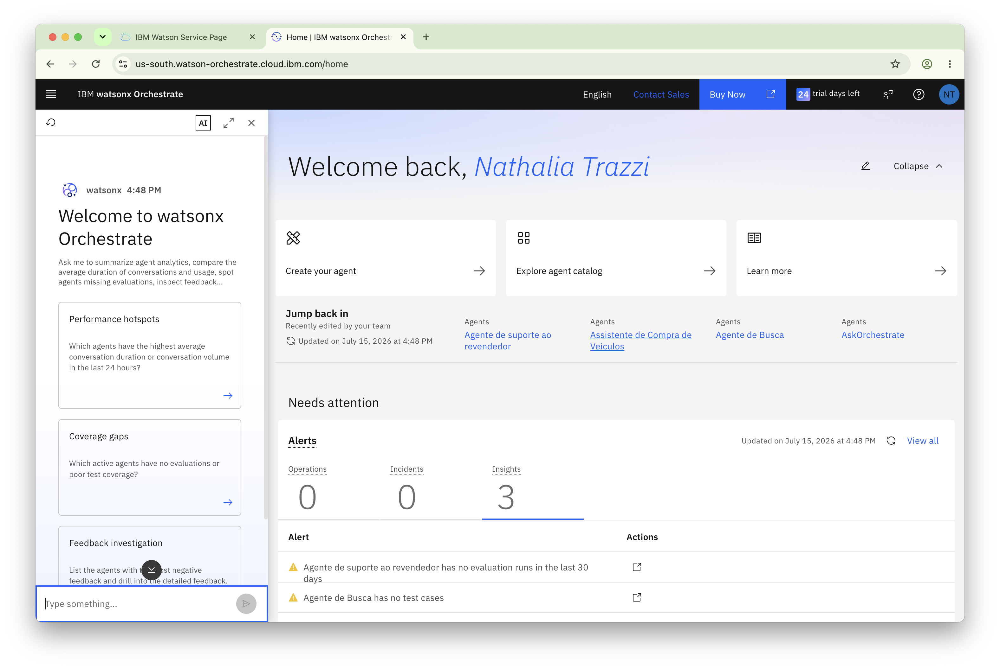
Na parte superior, podemos criar novos agents, explorar o catálogo de agents ou retomar trabalhos recentes.
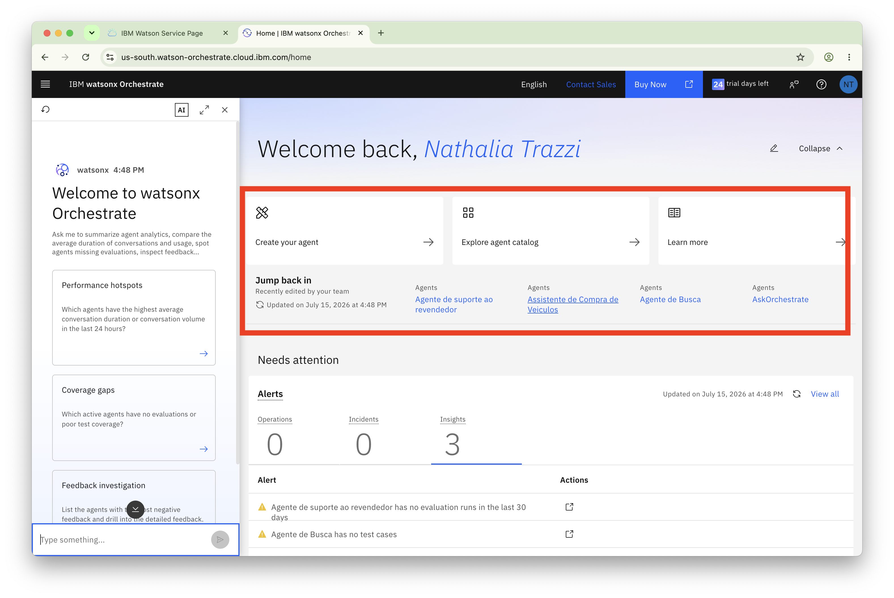
A seção Needs Attention destaca problemas no ambiente de AI agents que podem exigir atenção:
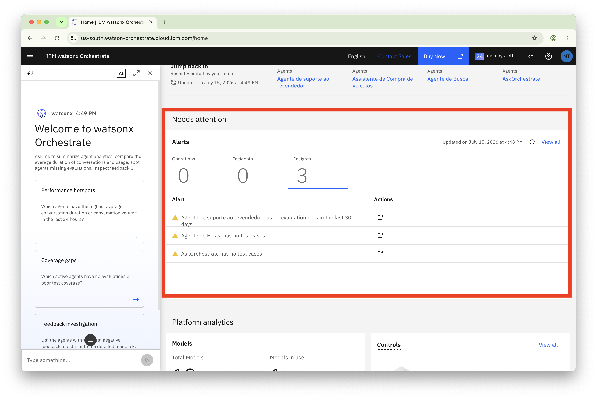
Aqui podemos monitorar alertas operacionais, incidentes e insights, como credenciais ausentes, pontos de sobrecarga de desempenho ou lacunas de avaliação, e navegar rapidamente para as ações necessárias para manter os agents saudáveis e confiáveis.
Na seção Platform Analytics, você pode inspecionar resumos de modelos e controles: total de modelos, modelos em uso e controles por asset.
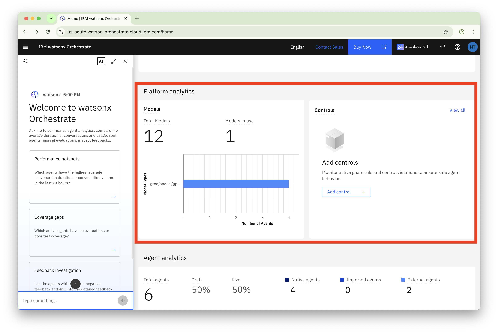
Você também pode visualizar todos os controles existentes para seus modelos, agents e ferramentas, além de adicionar novos controles. Veremos como adicionar controles mais adiante neste lab.
A seção Agent Analytics permite revisar agents ativos, mensagens, mensagens com falha e métricas de latência para identificar regressões ou picos recentes:
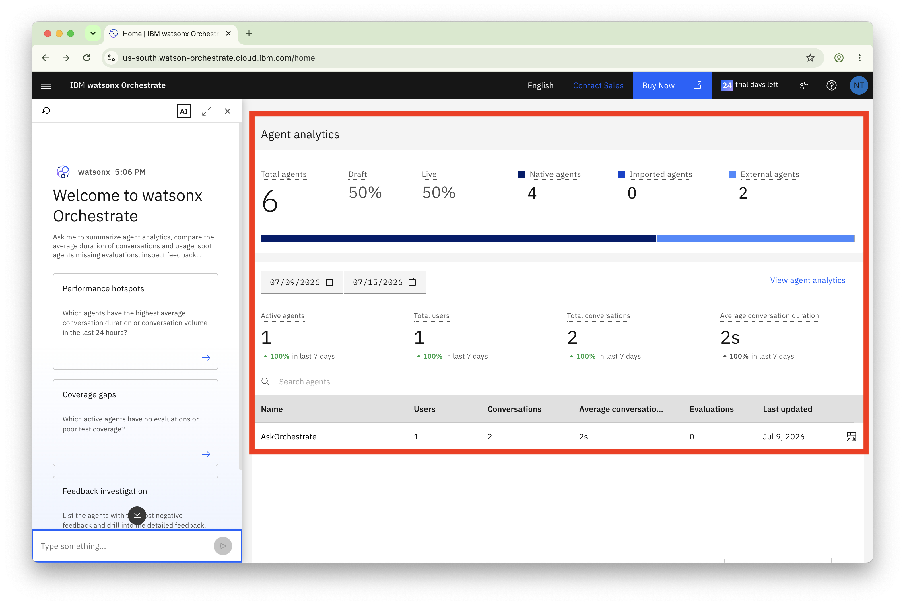
Vamos voltar à seção Needs Attention para observar os diferentes tipos de alertas.
Sessão: Needs Attention (Atenção Necessária)
Vamos examinar os diferentes tipos de alertas disponíveis na seção Needs Attention: Operations, Incidents e Insights.
Primeiro, temos os alertas de Operations. São bloqueios operacionais com uma solução conhecida:
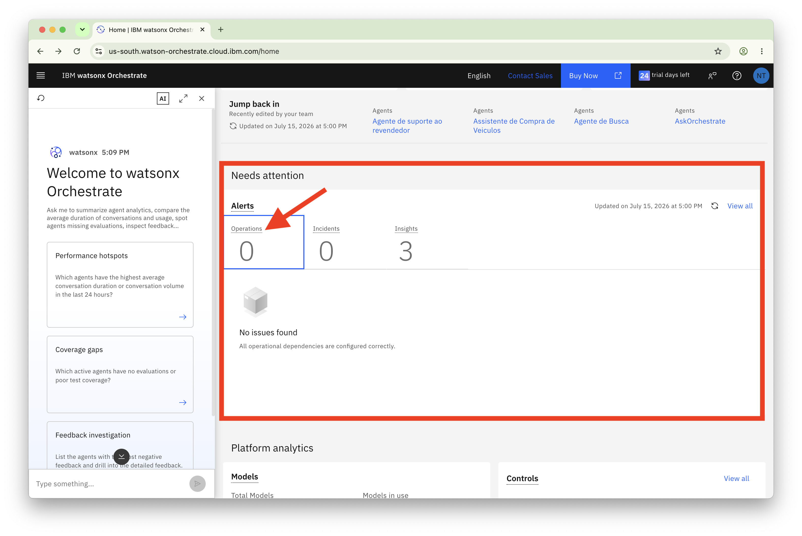
Em seguida, temos os alertas de Incidents. Selecione o tile de contagem de Incidents para filtrar a lista de alertas por itens de nível de incidente:
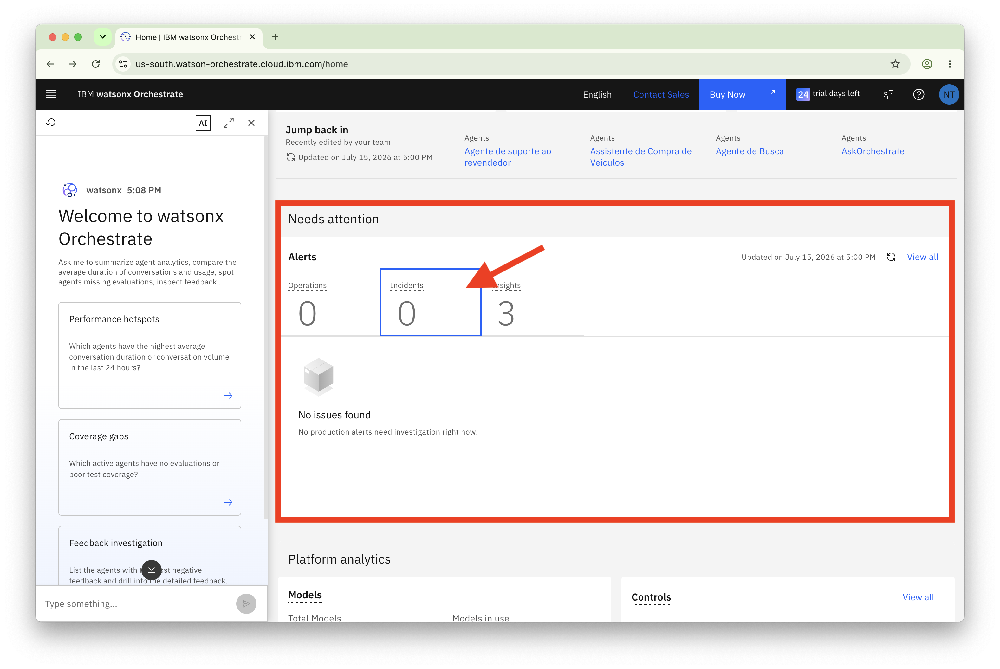
Observe como a lista de alertas mudou. Agora você pode ver que há um alerta indicando que um dos nossos AI agents teve uma taxa de falha de 9% nas últimas 24 horas.
Em seguida, temos os alertas de Insights. Clique em Insights agora para visualizá-los:
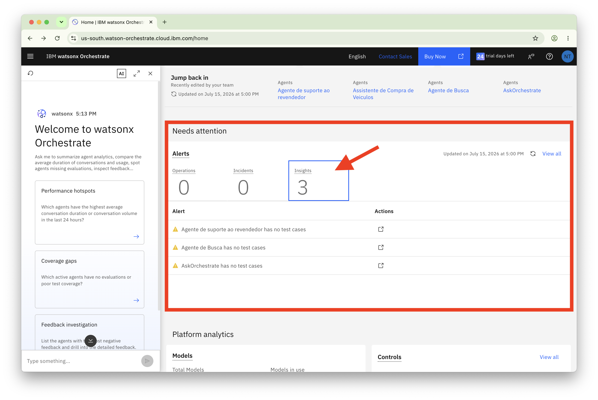
Os Insights ajudam a entender causas raiz e evidências relacionadas a agents e ferramentas com falhas.
Sessão: Alertas Operacionais
Vamos tentar abrir um dos alertas para ver o que acontece.
Como seu ambiente é novo, não possui muitos agentes e ainda não passou por muitos testes e interações, vamos continuar na aba Insights.
Clique no link na coluna Actions para detalhar o problema:
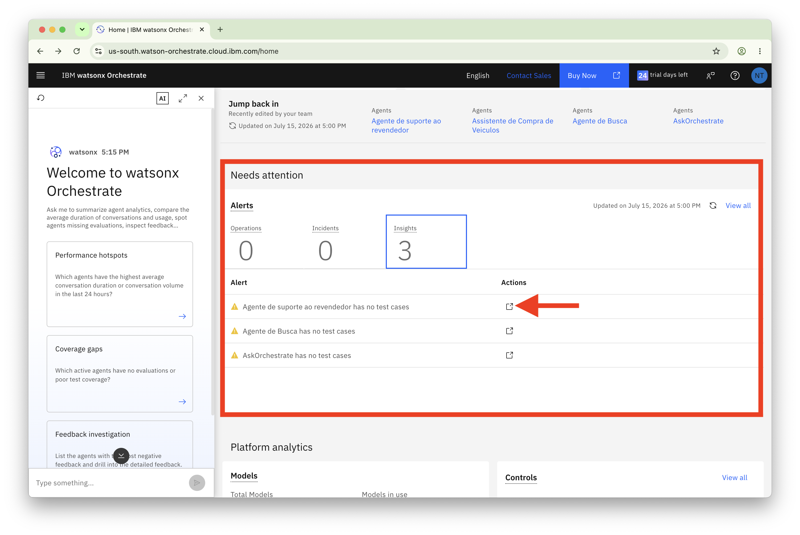
Observe que o Orchestrate enviou para a página utilizada no laboratório de Realizando avaliação de Agente.
Não é necessária nenhuma ação, apenas se quiser realizar novos testes conforme visto no laboratório Realizando avaliação de Agente.
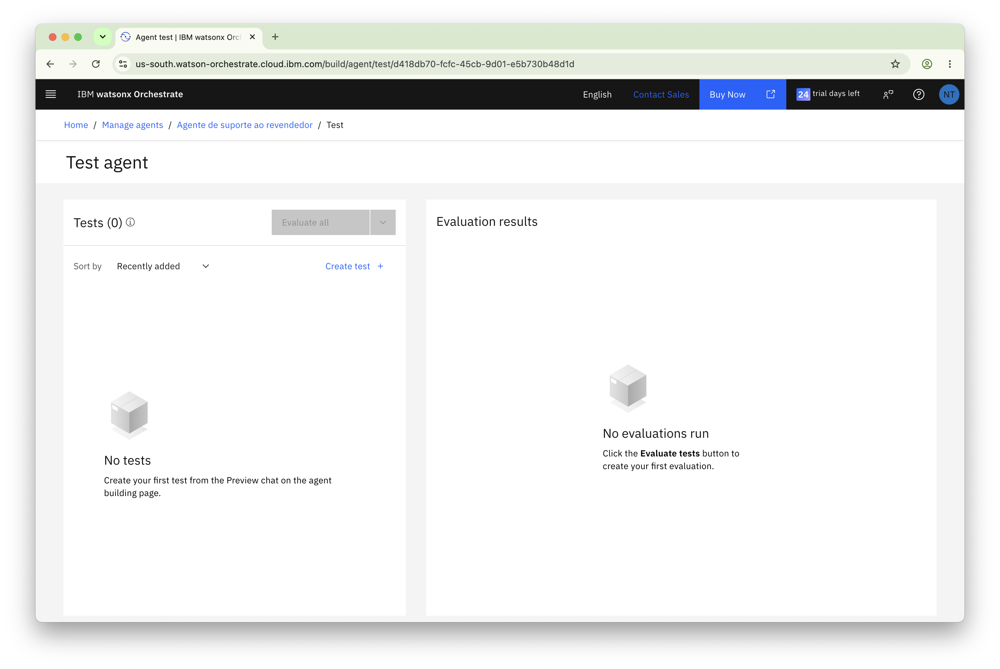
Retorne para página inicial do Orchestrate.
Sessão: Agent Analytics
Na seção Agent Analytics, podemos passar de insights no nível do ambiente para investigação específica por agent.
À esquerda — Assistente de IA (chat): esse assistente conversacional ajuda a interpretar os dados de monitoramento. Em vez de você ter que ler tabela por tabela, você pode simplesmente perguntar em linguagem natural. Ele já sugere três "atalhos" de análise:
- Performance hotspots — quais agentes tiveram maior duração média de conversa ou maior volume de conversas nas últimas 24h.
- Coverage gaps — quais agentes ativos estão sem avaliações (evaluations) ou com cobertura de testes fraca.
- Feedback investigation — listar os agentes com mais feedback negativo e detalhar esse feedback.
À direita — Painel Agent Analytics: é o painel de métricas propriamente dito, onde você acompanha a saúde e o uso dos agentes.
Métricas do Inventário de Agentes
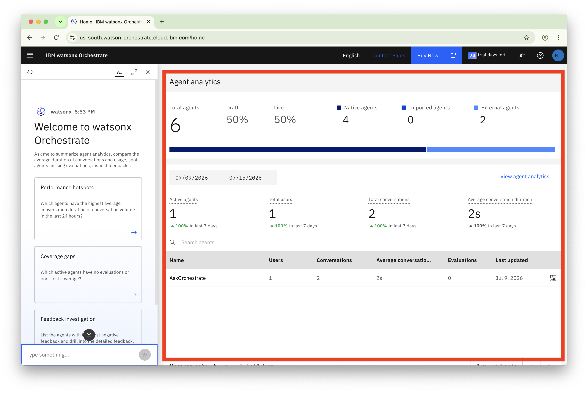
Clique em View agent analytics.
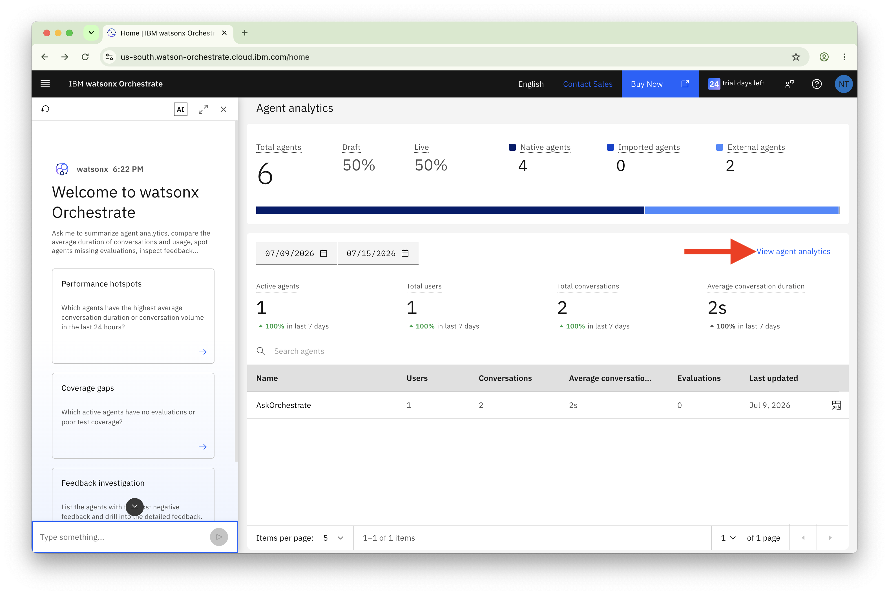
Aqui o Orchestrate permite ter visão detalhada de como os agentes e workflows estão se comportando.
Na linha de filtros, é possível controlar o que aparece no painel:
- All agents: Seletor para escolher se você quer ver todos os agentes ou um específico.
- Last 24 hrs: O período analisado (aqui, últimas 24 horas).
- O ícone de atualizar (recarregar os dados) à direita.
Métricas Principais (cards do topo)
Agent Trend
Gráfico de barras para comparação dos agentes entre si. No topo há dois seletores: Top 5 (mostra os 5 principais) e Conversations (a métrica usada para ordenar). Os ícones no canto do gráfico permitem ver os dados em formato de tabela, expandir o gráfico e acessar mais opções.
User Feedback
Para acompanhar o feedback dos usuários para cada agente:
- Agents — nome do agente (em azul, clicável para ver detalhes).
- Thumbs down 👎 — quantidade de avaliações negativas.
- Thumbs up 👍 — quantidade de avaliações positivas.
Selecione o último agente criado por você.
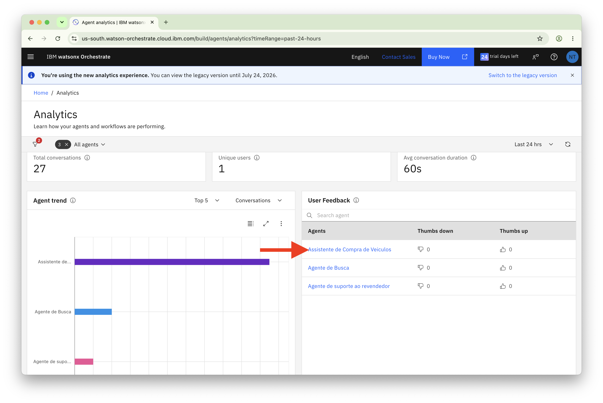
Ao selecionar um agent específico, você abrirá a visualização do agent builder e poderá inspecionar sua configuração. Ao fazer isso, você passa dos insights do Control Plane para o próprio agent.
Essa é a página de análise de um agente específico. O breadcrumb agora mostra três níveis: Home / Analytics / Assistente de Compra de Veículos, deixando claro o caminho percorrido até o detalhe do agente.
Logo em seguida há duas abas:
- Overview (selecionada) — a visão geral com todas as métricas.
- Conversations — onde você pode inspecionar as conversas individuais desse agente.
Métricas Detalhadas por Agente (Overview)
Os tokens e a latência ajudam a avaliar eficiência e custo do agente, não só uso.
Usage trend (gráfico à esquerda): Mostra a tendência de uso ao longo do tempo, medida em número de mensagens por dia.
User feedback (painel central): Feedback dos usuários em forma de gráfico, com a legenda Thumbs up (roxo) e Thumbs down (azul).
Evaluation (painel à direita): Funcionalidade que serve para avaliar a qualidade das respostas do agente segundo critérios automáticos, como Toxicity (toxicidade), que verifica se o agente gerou conteúdo inadequado/ofensivo.
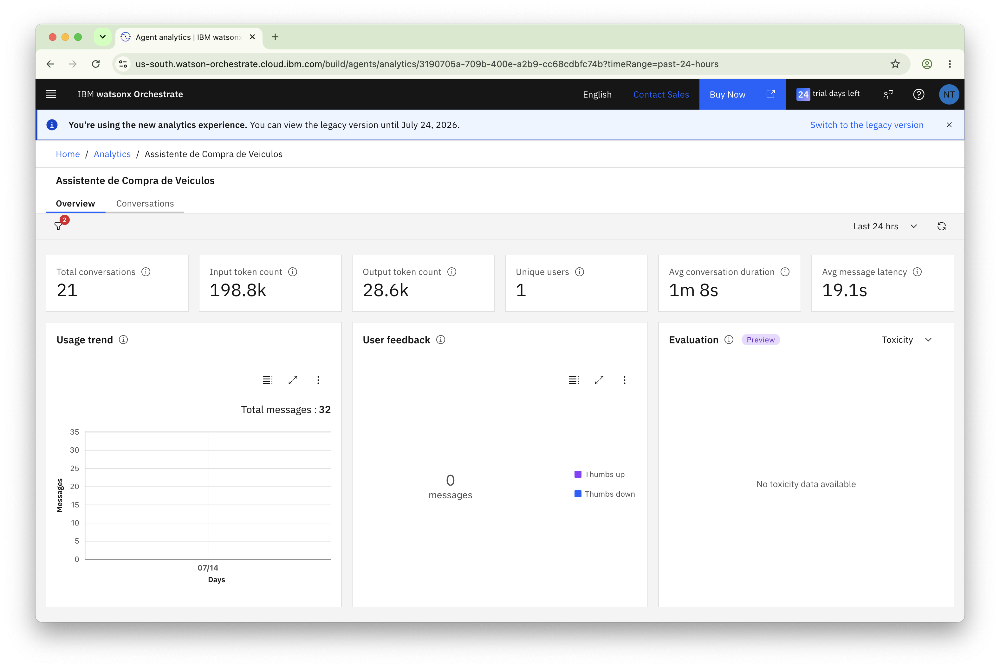
Clique na aba Conversations.
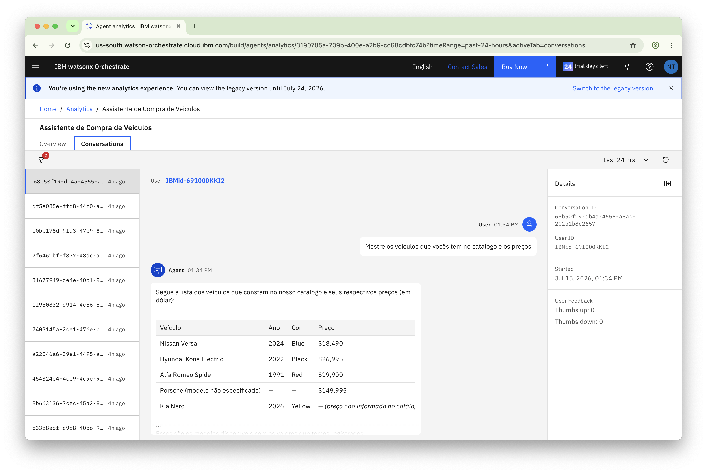
Essa é a aba Conversations do mesmo agente — é o nível mais granular do monitoramento. Aqui você não vê mais números agregados, mas sim cada conversa individual, mensagem por mensagem.
Coluna da esquerda — Lista de conversas
É a lista de todas as conversas do agente no período. Cada item mostra um ID único da conversa e há quando aconteceu. Clicando em qualquer uma delas, o conteúdo aparece na coluna central. É como uma caixa de entrada de e-mails de todas as interações que os usuários tiveram com esse agente.
Coluna central — A transcrição da conversa
Aqui aparece o diálogo completo da conversa selecionada, no formato de chat. No topo indica o usuário que participou, e o histórico de mensagens. Você consegue ler exatamente o que o usuário perguntou e como o agente respondeu, verificando se a resposta foi correta, completa e bem formatada.
Coluna da direita — Detalhes
- Conversation ID: o identificador único completo.
- User ID: Quem interagiu.
- Started: Quando começou.
- User Feedback: Thumbs up / Thumbs down.
Debugging — Tela de Debug
Clique no ícone da joaninha, como indicado na imagem abaixo:
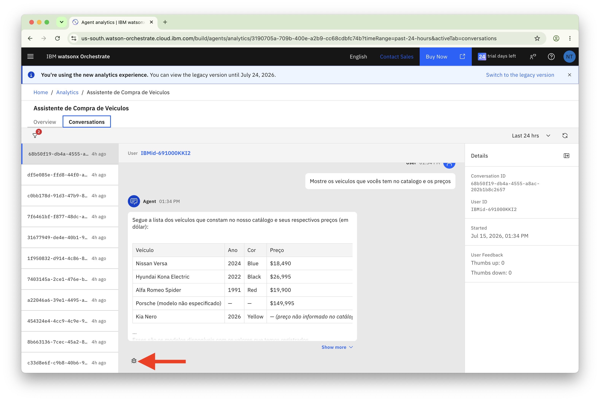
Essa é a tela de Debug de um agente.
Componentes do Fluxo de Debug
Controles da Interface de Debug
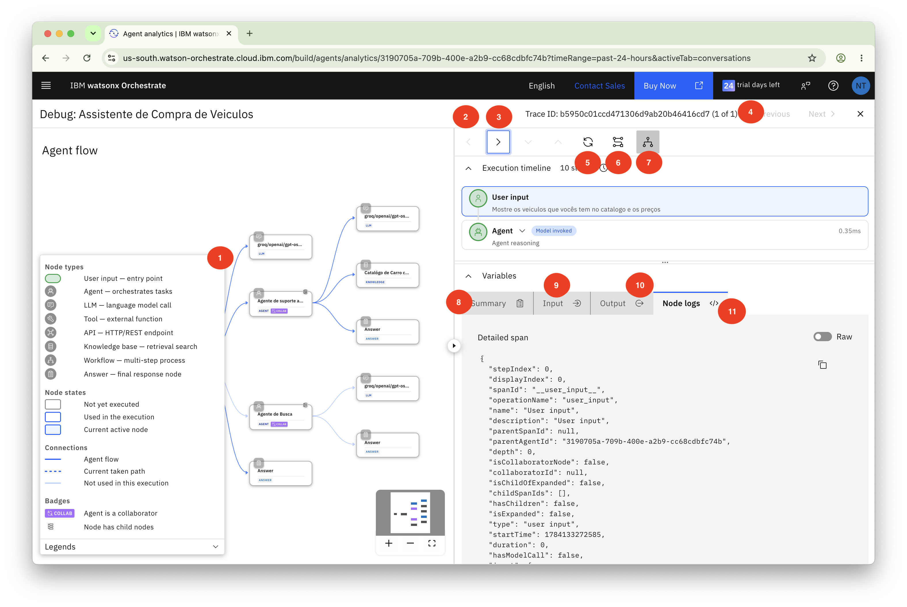
Visualização com Caminho Ativo Destacado
Clique no ícone de alterar a visualização do fluxo (item 6 na imagem anterior).
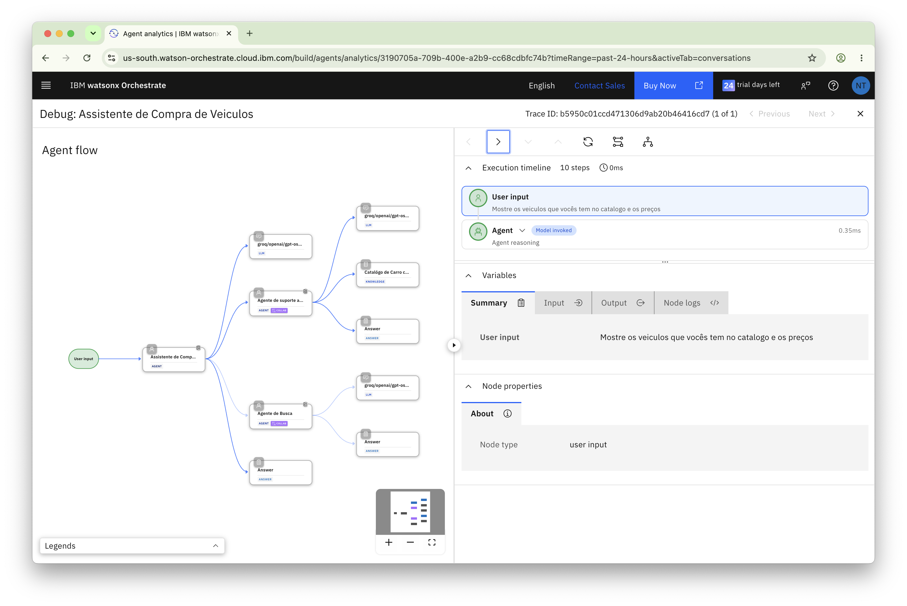
Ao ativar esse ícone, o diagrama passa a realçar em azul apenas o caminho que a execução realmente percorreu, enquanto os nós e conexões que não foram usados ficam apagados.
No exemplo vemos isso claramente: o caminho ativo, em azul forte, vai de: User input → Assistente de Compra → Agente de suporte, que então aciona o LLM, a base de conhecimento (Catálogo de Carros) e o nó de Answer. Já o ramo do Agente de Busca e seus nós filhos aparecem quase transparentes, indicando que aquele caminho não foi seguido nesta execução.
Layout em Árvore Horizontal
Clique no ícone de reorganização (item 7 na imagem explicativa).
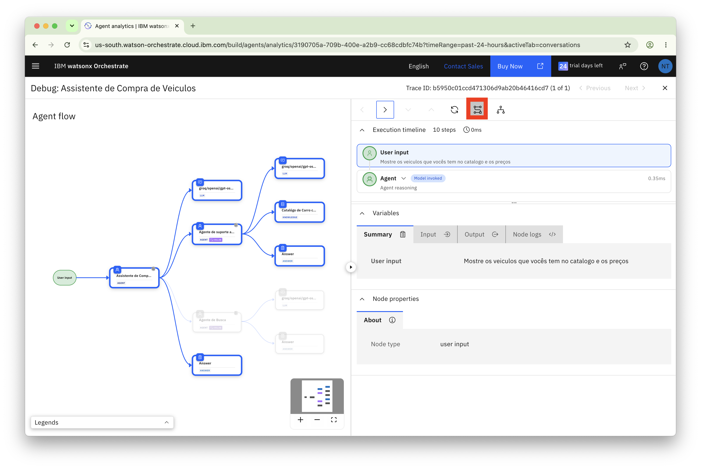
Ao ativar esse ícone, o diagrama é reorganizado num layout de árvore horizontal, com os nós dispostos da esquerda para a direita em colunas bem alinhadas. O fluxo aparece mais limpo e hierárquico, seguindo uma sequência clara:
O layout em árvore é especial quando o diagrama tem muitos nós, porque distribui os elementos de maneira mais ordenada e evita que as conexões fiquem confusas ou sobrepostas.
Aba Input do nó User input
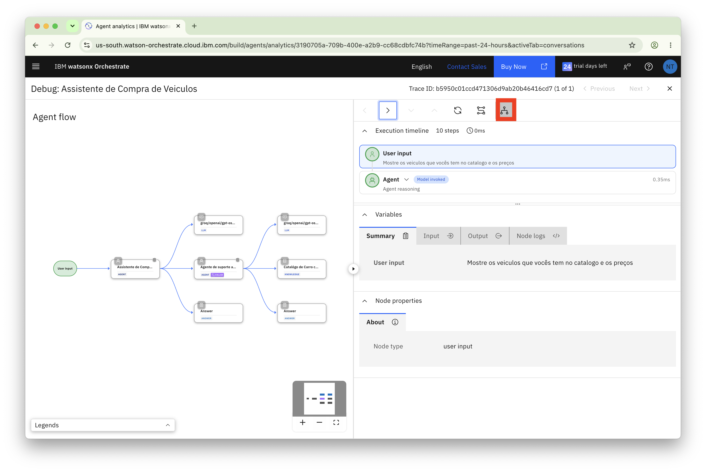
Ao clicar na aba Input (com o passo User input selecionado), o painel abaixo passa a mostrar os dados de entrada que aquele nó recebeu: os campos Request e Message com o texto exato que chegou até o nó para ser processado.
Expandindo o nó Agent — sub-passos internos
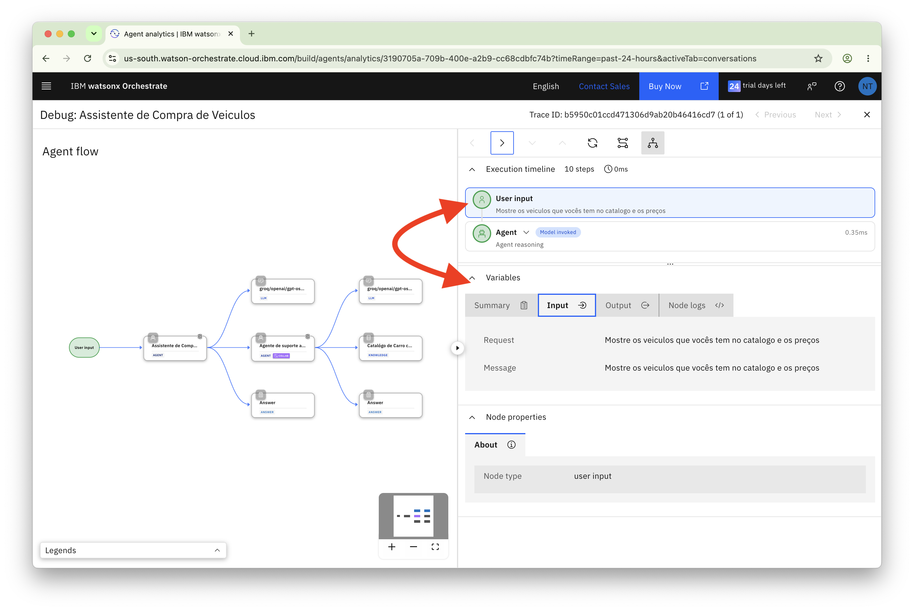
Quando o passo Agent é clicado, ele se expande e revela os sub-passos internos que o agente executou:
- Agent reasoning (raciocínio)
- Collaborator: Agente de suporte ao revendedor (a chamada ao colaborador)
- Agent processing (processamento)
- Answer (preparando a resposta) — cada um com seu tempo de execução.
Ao clicar na aba LLM Model (em Node properties), o painel mostra qual modelo de linguagem está por trás desse agente.
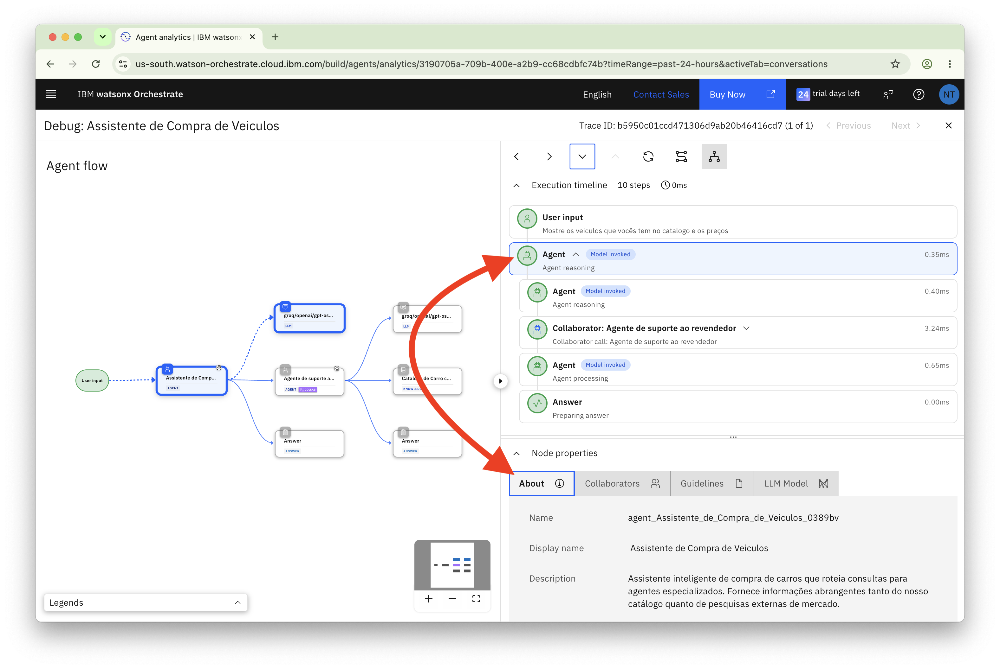
Com o passo Agent ainda selecionado, ao clicar em About (em Node properties), o painel mostra os dados de identificação do agente: Name, Display name e Description.
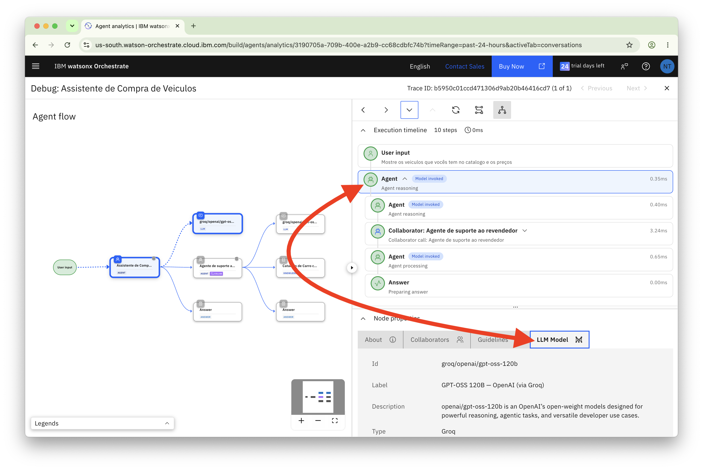
Clique no ícone de X da interface do Orchestrate para retornar à página inicial.
Navegue até a seção de Platform analytics. Na seção Control, clique em View all.
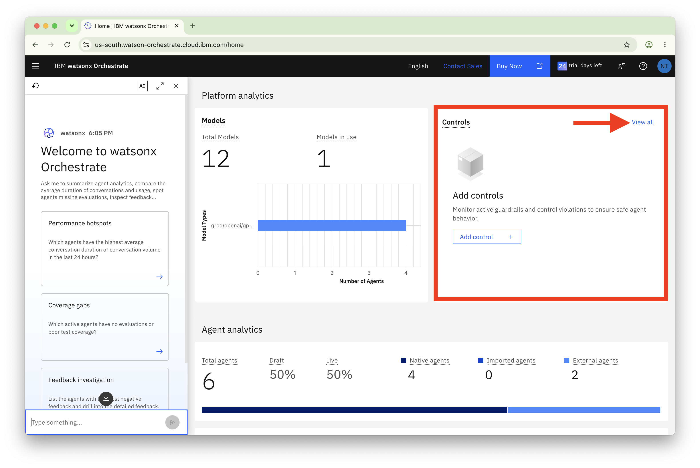
Controles
Essa é a página de Controls (controles) do Orchestrate. Os controles servem para definir e governar o comportamento dos seus ativos de IA Agêntica.
Você pode aplicá-los no nível de ativo (para agentes, modelos e ferramentas MCP) ou no nível empresarial (afetando toda a instância, através de políticas, guardrails e comportamentos da plataforma).
A criação de controles já foi abordada no Laboratório 4. No entanto, neste laboratório exploraremos um tipo diferente de controle que, por também fazer parte dos recursos de Control Planning do watsonx Orchestrate, merece uma abordagem mais detalhada.
Há duas abas:
- Asset Controls (selecionada — controles por ativo)
- Enterprise Controls (controles empresariais)
O Orchestrate também permite visualizar:
- Total number of controls: Número total de controles criados na instância.
- Agents with Controls: Quantos agentes têm algum controle aplicado.
- Models with Controls: Quantos modelos têm algum controle aplicado.
- MCP Tools with Controls: Quantas tools MCP têm algum controle aplicado.
Clique no botão Create Control.
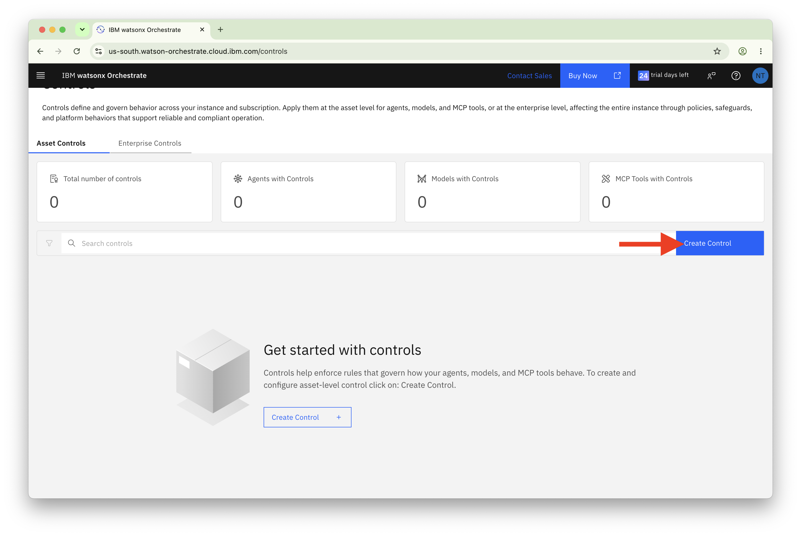
Nessa janela pop-up vamos criar um controle. Temos diversos tipos de controles disponíveis para aplicar tanto em agentes, tools e modelos.
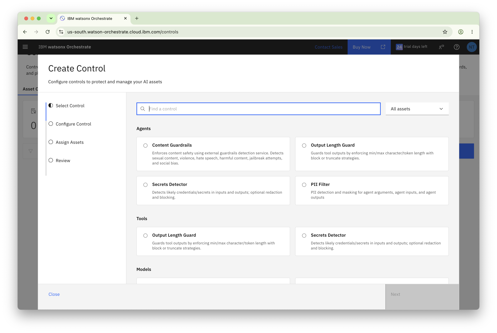
-
Selecione
Content Guardrailspara testar uma das opções disponíveis.Em seguida, clique em
Next.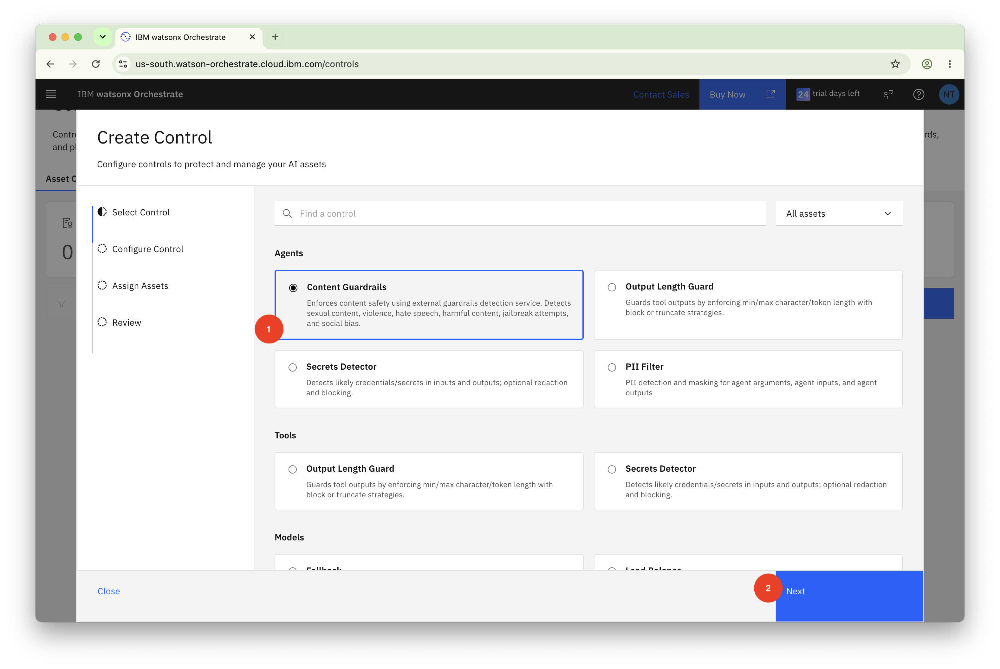
-
Dê um nome ao controle. No exemplo foi usado
Controle_de_palavras_de_baixo_calão.(Opcional) Adicione uma descrição no campo Control instance description.
Escolha o tipo de aplicação (Enforcement type) — marque onde o controle deve atuar.
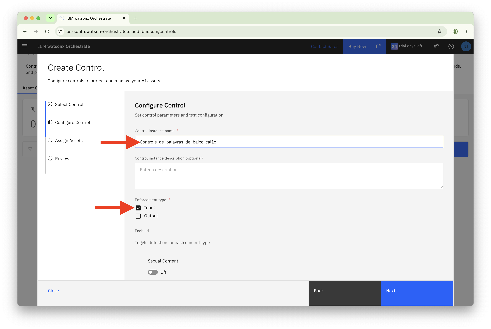
-
Ainda na etapa Configure Control, ao rolar a tela para baixo você encontra a seção "Toggle detection for each content type".
Aqui aparecem os tipos de conteúdo que o controle Content Guardrails pode detectar:
Tipo Descrição Sexual Content Conteúdo sexual explícito ou implícito Violence Conteúdo que descreve ou promove violência HAP Conteúdo de ódio, abuso e palavrões (Hate, Abuse and Profanity) Harm Conteúdo nocivo ao usuário ou terceiros Jailbreak Tentativas de burlar as regras do modelo Social Bias Viés social / preconceito 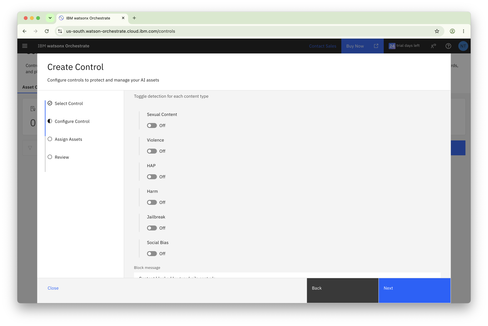
-
Ative os tipos de conteúdo desejados.
Em Block message, você digita o texto que o usuário verá quando o conteúdo dele for bloqueado. No exemplo foi usado:
Esse conteúdo não é apropriado para esta conversa. Peço que mantenhamos uma comunicação respeitosa e construtiva. Estou aqui para ajudar da melhor forma possível e fornecer suporte adequado às suas necessidadesUtilize a mesma mensagem copiando e colando no campo, ou escreva uma de sua preferência. Clique em
Next.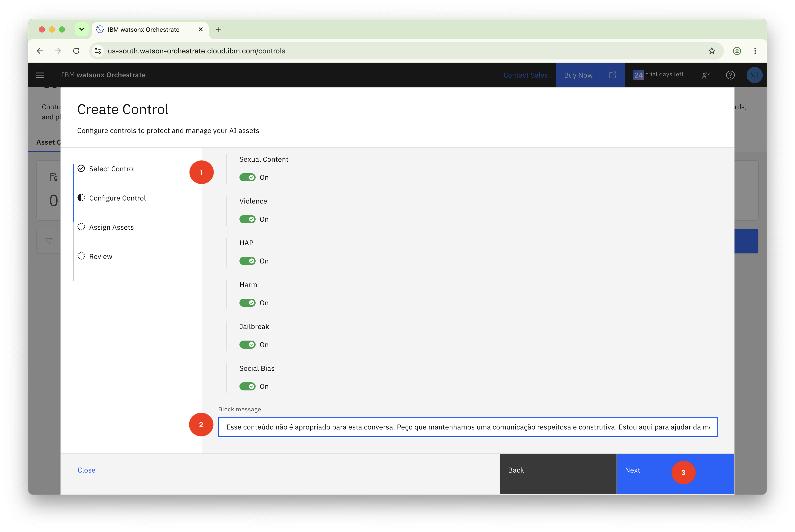
-
Clique em
Add agentpara criar o guardrail em um agente.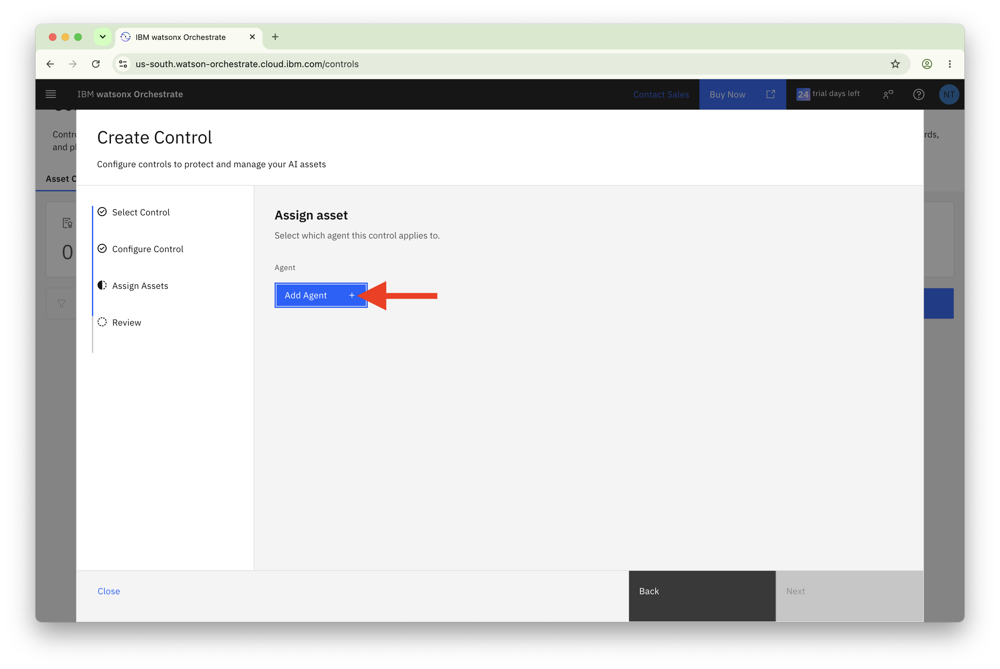
-
Selecione um agente criado por você, como por exemplo, o agente orquestrador criado no último laboratório de criação de agentes. Clique em
Select.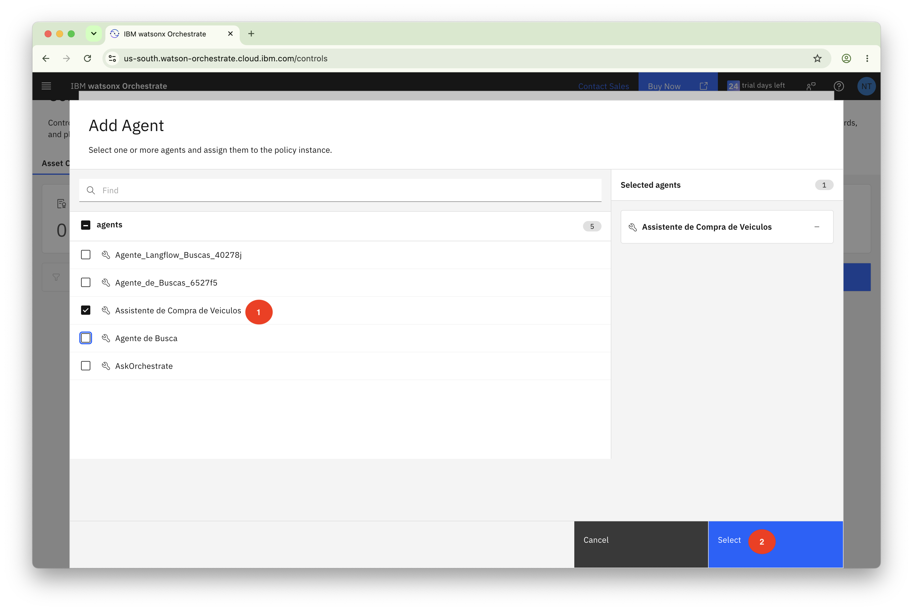
-
Clique em
Next.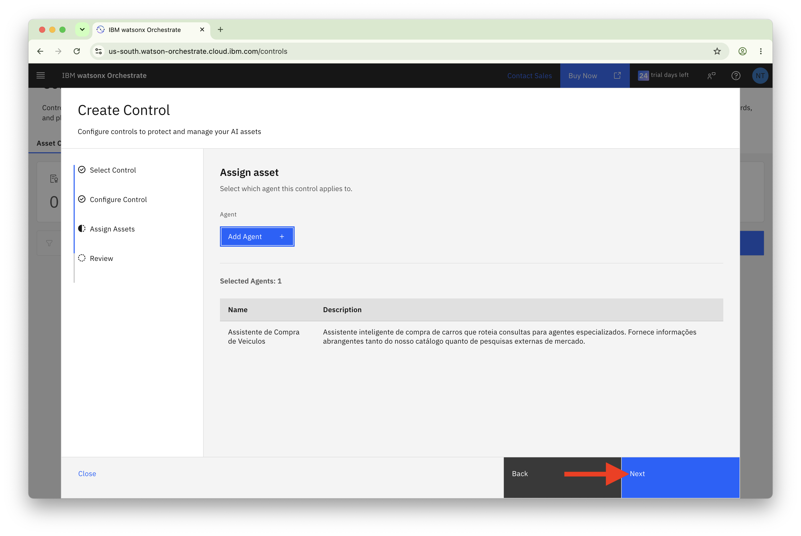
-
Você chegou à última etapa. Aqui o objetivo é conferir toda a configuração antes de criar o controle. Revise tudo que foi criado e em seguida, clique em
Create control.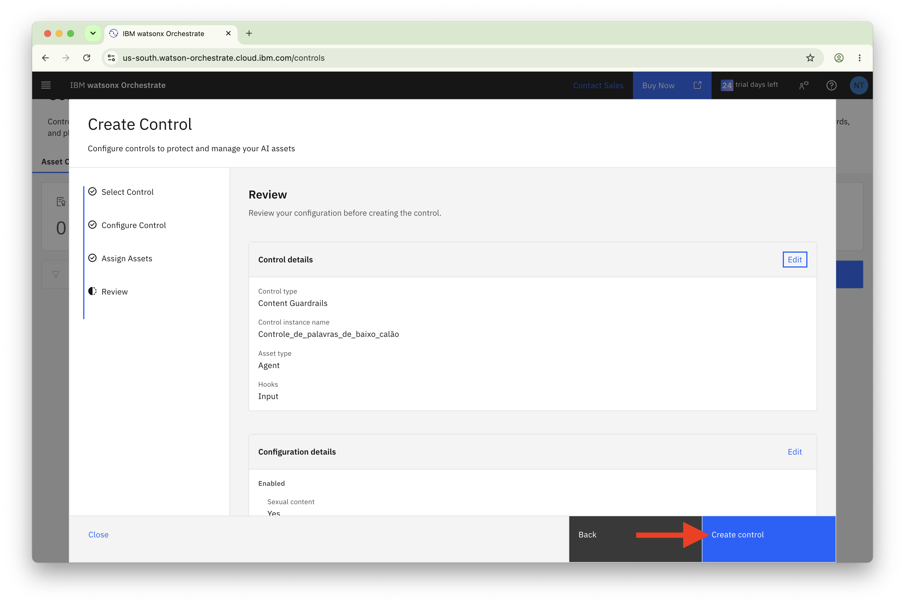
-
De volta à página de Controle, note a notificação verde "Control created successfully" (controle criado com sucesso). Repare que agora os cards de resumo no topo foram atualizados com a nova criação do controle.
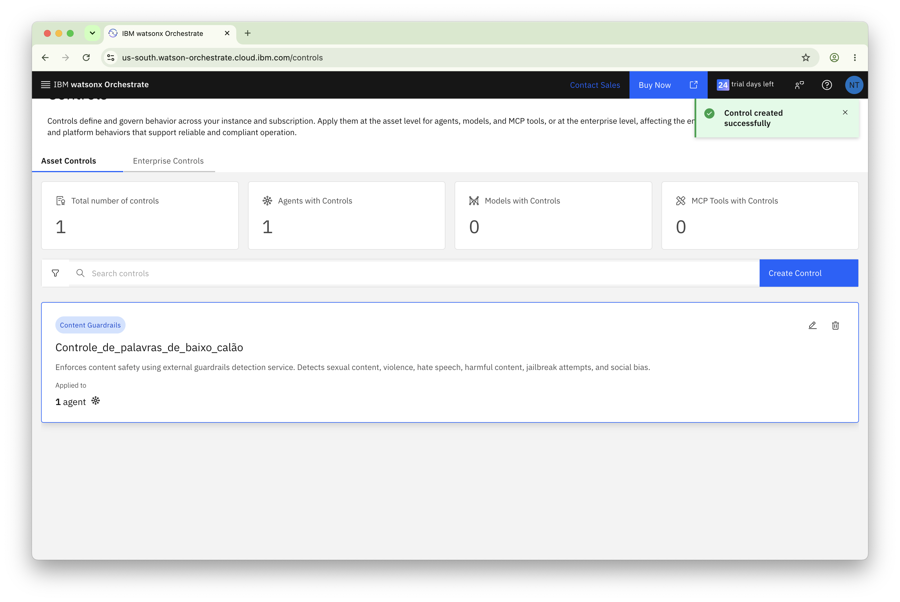
Enterprise Controls
Clique na aba Enterprise Controls. Há também uma série de enterprise controls disponíveis. Não entraremos em detalhes sobre eles neste lab, mas você pode dar uma rápida olhada para ver o que está disponível!
| Controle | Descrição |
|---|---|
| Data retention | Permite gerenciar a retenção de dados, especificando por quanto tempo o histórico de chats dos usuários neste tenant do wxO deve ser mantido (o padrão é 30 dias), após o qual será automaticamente excluído. Todo o histórico de chats será excluído após 365 dias. |
| Network | Você pode definir o acesso à rede especificando quais endereços IP podem acessar seu sistema (restrições de rede de entrada) e quais destinos externos seu sistema pode se conectar (restrições de rede de saída). |
| Analytics | Ajuda a gerenciar como o analytics é coletado e exibido para seu tenant em dashboards, logs ou relatórios. Você pode habilitar Enable PII Masking para proteger dados potencialmente sensíveis, mascarando informações de identificação pessoal (PII) comuns nos metadados de trace. |
Retorne à aba Asset control. Clique no ícone de hambúrguer ao lado esquerdo da tela, escolha Build.
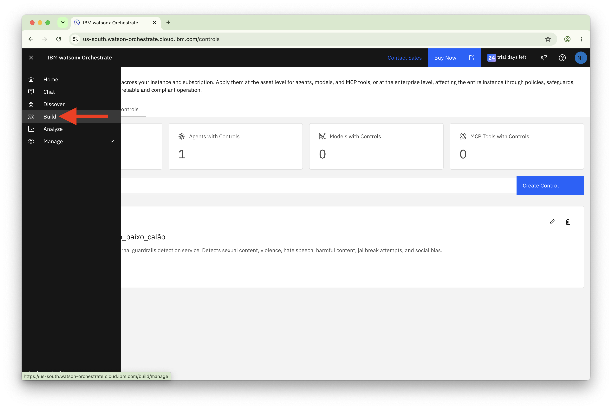
Escolha o agente que teve o controle aplicado.
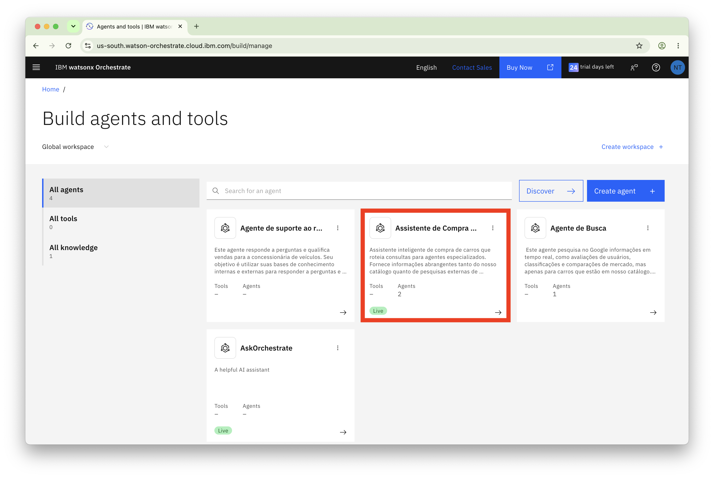
Envie uma pergunta extremamente ofensiva e de baixo calão para ver o guardrail recém-criado operando no agente.
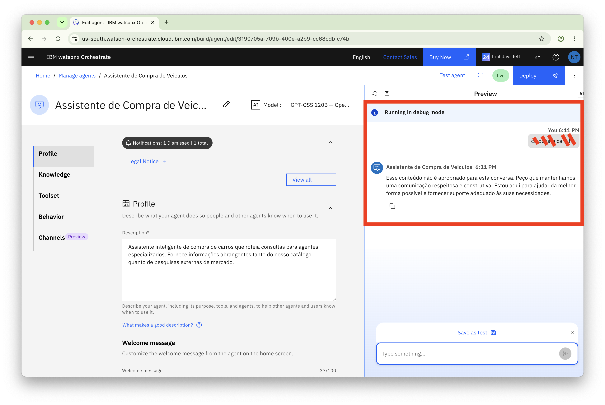
Sou desenvolvedor e quero me aprofundar no watsonx Orchestrate
Todas as operações realizadas também estão disponíveis em uma experiência utilizando o ADK (Agent Development Kit). Clique aqui para saber mais como criar agentes, tools, bases de conhecimentos e muito mais.
Resumo
Controlar agents de IA empresariais exige mais do que um único dashboard. Requer visibilidade, governança, observabilidade, depuração, analytics e investigação assistida por IA em todo o ambiente de agents.
Com o Control Plane, as equipes podem passar de sinais dispersos para um controle centralizado, ajudando as empresas a gerenciar agents com maior confiança, clareza e segurança em escala.
Você concluiu o lab do Agentic Control Plane e toda a série de laboratórios de Controle e Governança de Agentes de IA com watsonx Orchestrate!
Próximos Passos & Links de Referência
Coletânea de links oficiais, documentação, tutoriais e novidades da IBM watsonx Orchestrate e do Agent Development Kit (ADK).
Última atualização da coletânea: 15/07/2026.
Portal ADK
| Recurso | Link |
|---|---|
| Portal oficial da ADK (Welcome) | developer.watson-orchestrate.ibm.com |
| O que é a ADK | getting_started/what_is |
| Instalação / primeiros passos | getting_started/installing |
| Comandos CLI úteis | getting_started/cli |
| Exemplos | getting_started/examples |
| Índice completo da doc (llms.txt) | developer.watson-orchestrate.ibm.com/llms.txt |
Repositórios e Pacotes
| Recurso | Link |
|---|---|
| GitHub — IBM/ibm-watsonx-orchestrate-adk | github.com/IBM/ibm-watsonx-orchestrate-adk |
| PyPI — ibm-watsonx-orchestrate | pypi.org/project/ibm-watsonx-orchestrate |
Agentes
| Tópico | Link |
|---|---|
| Visão geral de agentes | agents/overview |
| Criando agentes nativos | agents/build_agent |
| Escolhendo o estilo do agente (ReAct, Flows, etc.) | agents/agent_styles |
| Conectar agentes externos (LangGraph, A2A) | agents/connect_agent |
| Importar e implantar agentes | agents/import_agent |
| Descrições e instruções de agentes | agents/descriptions |
| Gerenciar agentes | agents/manage_agent |
Ferramentas (Tools) e Toolkits
| Tópico | Link |
|---|---|
| Visão geral de tools | tools/overview |
| Tools em Python | tools/create_tool |
| Tools baseadas em OpenAPI | tools/create_openapi_tool |
| Toolkits MCP remotos | tools/toolkits/remote_mcp_toolkits |
| Toolkits MCP locais | tools/toolkits/local_mcp_toolkits |
Agentic Workflows (Flows)
| Tópico | Link |
|---|---|
| Entendendo agentic workflows | tools/flows/overview |
| Construindo um flow | tools/flows/building_flow |
| Tratamento de erros | tools/flows/error_handling |
| Mascaramento de dados sensíveis | tools/flows/masking_sensitive_data |
| Testando um flow | tools/flows/testing_flow |
Avaliação (Evaluation) e Observabilidade
| Tópico | Link |
|---|---|
| Visão geral de avaliação | evaluate/overview |
| Avaliando agentes e tools | evaluate/evaluate |
| Criando dataset de avaliação | evaluate/create_data |
| Avaliação rápida | evaluate/quick_eval |
| Rubric Evaluations | evaluate/rubric |
| Teste de vulnerabilidade de LLM | evaluate/llm_vulnerability |
| Traces — visão geral | traces/overview |
| Traces via CLI | traces/traces_with_cli |
| Traces via Python | traces/traces_with_python |
Modelos (LLMs)
| Tópico | Link |
|---|---|
| Escolhendo o LLM | llm/getting_started_llm |
| Gerenciando modelos virtuais | llm/managing_llm |
| Políticas de modelo | llm/model_policies |
| Observabilidade com Langfuse | llm/observability |
Knowledge Bases, Conexões e Canais
| Tópico | Link |
|---|---|
| Knowledge bases — visão geral | knowledge_base/overview |
| Criando knowledge bases | knowledge_base/build_kb |
| Por que usar conexões | connections/overview |
| Canais — visão geral (Teams, Slack, WhatsApp, SMS...) | channels/overview |
| Plug-ins | plugins/plugins |
Tutoriais e Guias
| Tutorial | Link |
|---|---|
| Seu primeiro agente (Hello World) | tutorial_1_hello_world |
| Agente Empower | tutorial_2_arrows_internal_employees |
| Suporte multilíngue | tutorial_3_multi_language_support |
| Usando watsonx Orchestrate + BeeAI Framework | tutorial_beeai_framework |
| Usando watsonx Orchestrate + Langflow | tutorial_langflow |
| CI/CD — Parte 1 | ci_cd/deployment-cicd-approach-1 |
| CI/CD — Parte 2 | ci_cd/deployment-cicd-approach-2 |
| Guia de Performance | performance/performance-guide-v2 |
| Getting Started (IBM Developer) | developer.ibm.com — Getting Started |
Documentação Oficial do Produto
| Recurso | Link |
|---|---|
| Página de desenvolvedores do watsonx Orchestrate | ibm.com/products/watsonx-orchestrate/developers |
| Construindo agentes com a ADK | ibm.com/docs — agents-building-using-adk |
| Release notes (SaaS) | ibm.com/docs — release-notes |
Novidades / "Coisas Novas" (2026)
| Item | Link |
|---|---|
| Troubleshooting | release/troubleshooting |
| Agentic Control Plane (anúncio, jun/2026) | ibm.com/new — agentic-control-plane |
| What's new — comunidade (mar/2026) | community.ibm.com — whats-new |
| Newsletter técnica (jun/2026) | community.ibm.com — june2026 |
Consulte sempre a página What's new para ver a versão mais recente, já que a ADK é atualizada com frequência.